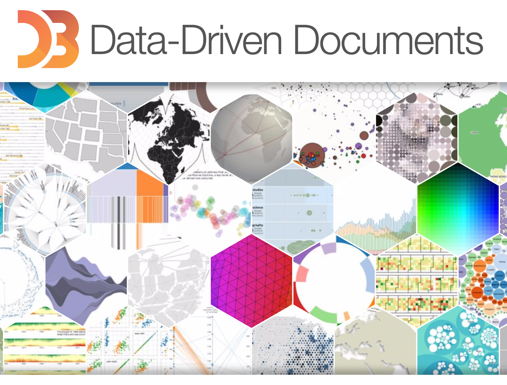
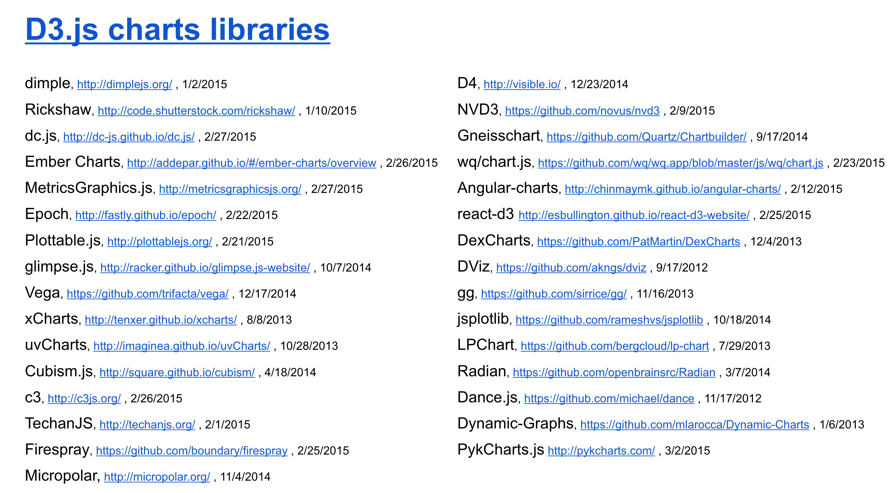

enjalot
A little bit about me:@enjalot
Portfolio
Studied Scientific Computing at FSU (data science for natural scientists).
Founding team of Lever where I designed, architected and implemented data infrastructure and products.
Organizer of the Bay Area d3 Meetup and the annual d3.unconf.
an ecosystem?
Part of d3's popularity is how visible the results of using it are.
You may have first seen d3 in an awesome interactive on the NYTimes from
Mike Bostock,
Shan Carter or
Gregor Aisch.
Perhaps you browsed one of the many examples in the official gallery.

It's easy to see that d3 creates a lot of possibilities for interesting custom interactive data visualizations.
The problem is, where do you start?
charts
Something you hear a lot when people talk about d3 is charts.

This list of 50+ chart libraries
compiled by Christophe Viau.
d3 stands for data driven documents. Not "yet another charting library".
Charts do have their place in this world, but if all you want is an off-the-shelf configurable chart template there isn't reall a need to learn d3.
That said, it is totally valid to start learning d3 by making some simple charts. It turns out that charts are some of the simplest things you can
make with d3.
If you want to make custom interactive graphics however, there is a lot to learn. Luckily there are a lot of resources to learn from!
getting started
There are a lot of links on the Tutorials page, but it can be a bit overwhelming.
I recommend everyone start with Scott Murray's excellent introduction to d3.
This tutorial covers the basics of d3 and how it ties into HTML, CSS, SVG and JavaScript.
In fact, one of the nice things about d3 is that it is really just a toolkit for manipulating web standards.
Another great set of introductory resources are Curran Kelleher's Youtube Videos.
In particular this video is great for the basics of coding with d3
and this video is a nice
introduction to data visualization principles with interactive slides.
Once you have been introduced to some of the basics, the next thing I recommend is Mike Bostock's
For Example interactive essay.
This essay/talk goes over all of the benefits of practicing d3 by making small examples. We all know that practice makes perfect, but in this age of the internet the way you practice can make a big difference!
going deep
Ok. So you're ready to get your hands dirty and make something really cool. Now what?
Most likely you will have the API Reference open in one tab.
Let's say you want to make a cool force layout diagram.
You read the functions, but are not quite sure how to put them all together.
You notice there is a list of helpful examples so you choose one.
You want to play with it so you load it up in blockbuilder.
But before long you want to do something complicated, so you search for some more examples
with blockbuilder search.
That was fun, but now we want to make a circle pack layout
but we need to nest our data first.
Unfortunately neither of these API pages have examples, let alone an example together.
Luckily we can do a more complex search
to find one!
Alright, maybe we should dial it back and search for some simpler examples.
Mike gave a great talk on visualizing algorithms (interactive essay):
Let's see what kind of algorithms people have tried to visualize.
further reading
I've written a couple of posts that go more in depth on learning d3 from examples:
How do you learn d3.js?
Searching for d3 examples
Join us at upcoming meetups!